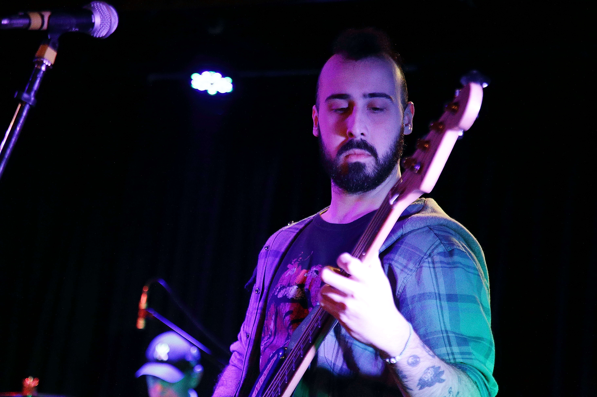

Nuestra Historia
La banda oriunda de Miramar "La Biondo" quien fuera refundada en el año 2021 a logrado abrirse paso en el genero de rock cancion,
influida por bandas como Guasones, Ciro y Estelares, llego a grabar en un estudio prestigioso como lo es romaphonic, con la productora mural.
Sus letras llenas de realidad y sentido captaron la atencion de una gran editorial como lo es Warner Chapell.
En el 2024 la banda grabó su pprimer disco de estudio, que ya cuenta con su corte difusion "Mente y corazon" en Youtube por el canal VEVO.
en el mes de julio 2024 este disco fue presentado en vivo en el teatro Abel Santa Cruz con sala llena dónde más de 200 persona vibraron junto a esta gran banda.
En los años venideros hubo un pequeño parate debido a la vida de cada integrante de la banda, pero siempre siguiendo componiendo y tocando cuanto mas se pudiese.
Actualmente la banda se encuentra preparando su segundo disco de estudio, con fecha de lanzamiento para el año 2026. y con un bajista nuevo que se sumo a la banda este mismo 2026.
